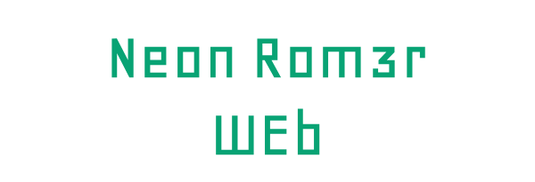

Que es neon rom3r web?
Es una aplicación web basada en los datos de la aplicación de
neonrom3r que le permite a el usuario descargar los roms disponibles sin la
necesidad de tener descargada la aplicacion
Usted puede seleccionar los roms
que desea haciendo click en menu en la
parte superior izquierda y luego seleccionando nombre de la consola desde
el menú